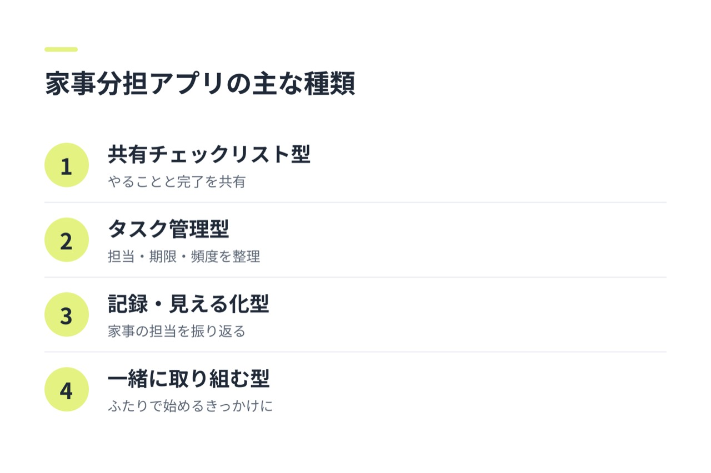
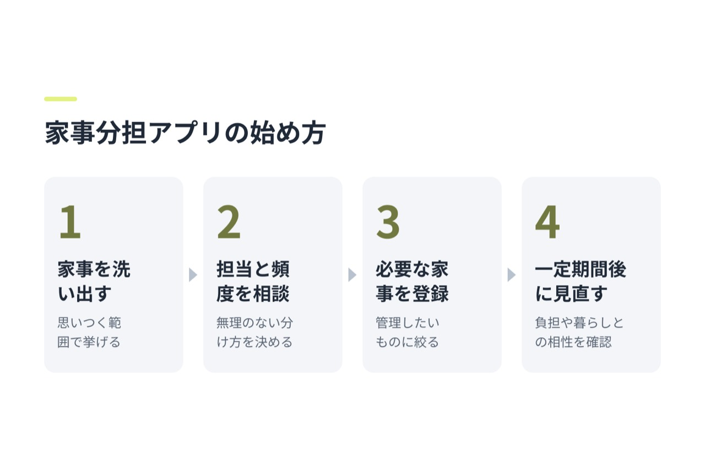

家事分担アプリを選ぶときは、機能の多さだけでなく、ふたりの生活に合うかどうかが大切です。比較表を見る前に、あなたが決めるべきことは次の3つです。
- 家事を一覧で管理したいのか、分担を見えるようにしたいのか
- ふたりがそれぞれのスマートフォンから使う必要があるか
- 家事を効率よく整理したいのか、一緒に取り組むきっかけがほしいのか
家事を一覧で管理したいなら、共有チェックリストやタスク管理型が候補です。担当の見える化を重視するなら、分担や記録に対応しているかを確認しましょう。ふたりで家事に取り組むきっかけを探している場合は、一緒に始めたり、楽しく続けたりする工夫があるかも確認してみましょう。具体的な機能や料金は、利用前に公式案内で確認してください。
家事分担アプリにはどんな種類がある？

家事分担アプリは、主に「家事を共有する」「担当を見えるようにする」「一緒に取り組むきっかけをつくる」といった役割で選べます。ひとつのアプリが複数の役割を持つ場合もあるため、名前や見た目だけでなく、必要な機能を確かめることが大切です。
- 共有チェックリスト型：やることを一覧にして、完了したかを共有したいふたり向け
- タスク管理型：家事の担当や期限、頻度なども整理したいふたり向け
- 記録・分担の見える化型：誰がどの家事を担当したかを振り返りたいふたり向け
- 一緒に取り組むきっかけをつくる型：家事をふたりで始める工夫や、楽しむきっかけを求めるふたり向け
ここでの分類は選ぶときの目安です。タスク登録や通知などの具体的な機能は、各アプリの公式サイトやアプリストアの案内で確認しましょう。
ふたりに合う家事分担アプリを選ぶ判断軸
比較するときは、まず次の点を確認しましょう。
ふたりで情報を共有しやすいか
家事の一覧や担当を、ふたりが同じように確認できるかを見ます。別々のスマートフォンから使う場合は、共有方法やアカウントの条件も確認してください。
家事の管理に必要な機能があるか
「やることを記録するだけでよい」のか、「担当や頻度も決めたい」のかで必要な機能は変わります。使いたい機能を先に絞り、アプリの説明に記載があるか確認しましょう。
通知や操作が負担にならないか
通知が多すぎると、使うこと自体が負担になる場合があります。通知の設定を変えられるか、登録や完了の操作が簡単かもチェックポイントです。
料金と利用条件が合うか
無料で使える範囲、追加料金の有無、対応端末などはアプリごとに異なります。料金や利用条件は変更されることもあるため、最新の公式案内を確認しましょう。
家事分担アプリの候補を機能や使いやすさで比較
アプリごとの機能は更新されることがあり、ここでは特定サービスの未確認機能を断定せず、選択肢のタイプで比べます。
| 選択肢 | 主な役割 | 向いているふたり | 利用前に確認したいこと |
|---|---|---|---|
| 共有チェックリスト型 | 家事を一覧で共有する | やることをシンプルに把握したい | ふたりでの共有方法、完了状況の同期 |
| タスク管理型 | 家事の担当や頻度などを管理する | 家事の種類が多く、細かく整理したい | 担当設定、繰り返し設定、通知の有無 |
| 記録・分担の見える化型 | 家事の担当や実施状況を振り返る | 分担の状況を話し合う材料がほしい | 記録できる内容、見返し方、共有範囲 |
| 一緒に取り組む型 | ふたりで家事を始めるきっかけをつくる | 一緒に家事をするきっかけを探している | 一緒に使う仕組み、利用できる機能、対応端末、料金 |
表の「利用前に確認したいこと」は、アプリの機能を断定するものではありません。気になる候補が見つかったら、公式サイトやアプリの案内で実際の対応状況を確認してください。
ふたりの状況に合わせて家事分担アプリを選ぶ
- 家事を一覧で見たいなら、共有チェックリスト型から検討します。まずは、ふたりが同じリストを確認できるかをチェックしましょう。
- 担当や頻度まで整理したいなら、タスク管理型が候補です。登録や見直しが簡単にできるかも確かめてください。
- 分担の状況を話し合いたいなら、記録や担当の見える化に対応したアプリを探します。記録は評価のためではなく、ふたりで状況を確認する材料として使うとよいでしょう。
- 家事を一緒に始めるきっかけがほしいなら、ふたりで取り組む工夫があるかを確認しましょう。具体的な機能や使い方は、公式案内で確認してください。
どのタイプが合うか迷う場合は、「家事を管理したい」のか「ふたりで始めるきっかけがほしい」のかを先に話し合うと、候補を絞りやすくなります。
家事分担アプリを使い始めるときの進め方

最初から家事をすべて登録する必要はありません。ふたりで相談しながら、少しずつ始めてみましょう。
- 家事を洗い出す：週末に行うことや、日常的に発生することを思いつく範囲で挙げます。
- 担当と頻度を話し合う：得意・不得意や予定を考慮し、無理のない分け方を決めます。
- 必要なものだけ登録する：まずは管理したい家事に絞り、使い勝手を試します。
- 一定期間後に見直す：負担になっていないか、登録内容が実際の暮らしに合っているかを一緒に確認します。
最初に細かく決めすぎると、入力や見直しが面倒になることがあります。まずは気になる家事を少数だけ登録し、ふたりに合う使い方を探すのがおすすめです。
家事分担アプリを無理なく続けるコツ
アプリは、ふたりの話し合いを助ける道具として使いましょう。記録の数だけで分担を判断せず、忙しさや家事にかかる時間なども含めて相談することが大切です。
通知が多いと感じたら、設定を見直すか、必要な家事だけ登録します。担当や頻度も固定し続けるのではなく、仕事や予定が変わったときに調整できるようにしておくと、使い続けやすくなります。
よくある質問
家事分担アプリは無料で使えますか？
無料で使える範囲や有料機能の有無は、アプリによって異なります。ダウンロード前に、公式サイトやアプリストアで料金と利用条件を確認してください。
家事分担アプリはふたりそれぞれのスマートフォンで使えますか？
対応状況や共有方法はアプリごとに異なります。別々のスマートフォンで使いたい場合は、対応端末、アカウントの条件、データの共有方法を事前に確認しましょう。
家事分担アプリを選ぶとき、最初に確認すべき機能は何ですか？
まずは、ふたりで家事の情報を共有できるかを確認しましょう。そのうえで、担当設定や通知、繰り返し登録など、ふたりが必要とする機能に対応しているかを見ます。
家事分担アプリを使っても家事の偏りが解消しないときはどうすればよいですか？
アプリの記録を一緒に見ながら、家事の量や頻度、所要時間、予定の違いを話し合ってみましょう。記録を相手への指摘に使うのではなく、分担を調整するための材料として活用するのがポイントです。
家事をゲーム感覚で一緒に楽しみたいときは、何を確認するとよいですか？
楽しみながら続ける工夫や、ふたりで使う仕組みがあるかを確認しましょう。ゲーム要素の内容や具体的な機能、利用条件は公式案内で確認し、ふたりの希望に合うかを判断してください。
ふたりに合うものを選ぶために
- 家事の一覧を共有したいなら、共有チェックリスト型を確認する
- 担当や頻度も整理したいなら、タスク管理型を確認する
- 分担を振り返りたいなら、記録・見える化の機能を確認する
- ふたりで家事に取り組むきっかけを探しているなら、一緒に使うための工夫を確認する
- 候補が複数あるなら、共有方法・必要機能・料金・操作のしやすさを比べ、ふたりで続けやすいものを選ぶ